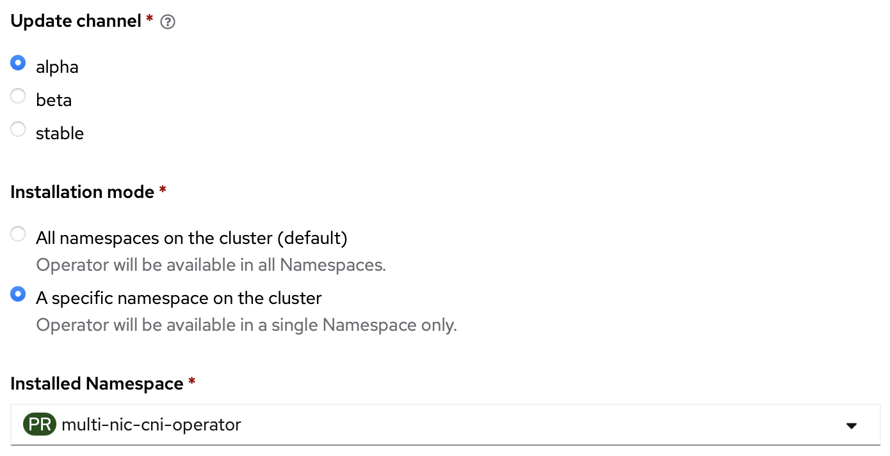

Alpha Channel

FIX-ME:
This channel does not include no bug fixes for incompability to newer version of network operator in https://github.com/foundation-model-stack/multi-nic-cni/pull/182.
v1.3.0 (based on v1.2.2)
Improvements:
- Make all fields except interfaceName in
HostInterface.Interfacesoptional - Add namespace watcher to add
NetworkAttachmentDefinitionwhen new namespace is created - Set
managercontainer as default container in controller
v1.2.2
Improvements:
-
Multi-config IPAM (
multi-config)ipam: | { "type": "multi-config", "ipam_type": "whereabouts", "args": { "eth1": { "range": "192.168.0.0/18" }, "eth2": { "range": "192.168.64.0/18" } } } -
Static IP support
annotations: k8s.v1.cni.cncf.io/networks: | [{ "name": "multinic-network", "cni-args": { "masters": ["eth1", "eth2"] }, "ips": [ "192.168.0.1/18", "192.168.64.1/18" ] }]
v1.2.1
Improvements:
-
Unmanaged HostNetworkInterface for IP-less network device
-
zero host block/zero interface block
apiVersion: multinic.fms.io/v1 kind: MultiNicNetwork metadata: name: multinic-unmanaged spec: ipam: | { "type": "multi-nic-ipam", "hostBlock": 0, "interfaceBlock": 0, "vlanMode": "l2" } multiNICIPAM: true plugin: cniVersion: "0.3.0" type: ipvlan args: mode: l2 -
specify static cidr of each host
apiVersion: multinic.fms.io/v1 kind: HostInterface metadata: name: node-1 labels: multi-nic-unmanaged: "true" spec: hostName: node-1 interfaces: - hostIP: "" interfaceName: eth1 netAddress: 192.168.0.0/24 pciAddress: "" product: "" vendor: "" - hostIP: "" interfaceName: eth2 netAddress: 192.168.1.0/24 pciAddress: "" product: "" vendor: ""
-
-
Multi-gateway route configuration support
apiVersion: multinic.fms.io/v1 kind: MultiNicNetwork metadata: name: multinic-multi-gateway spec: ipam: | { "type": "multi-nic-ipam", ... "routes": [{"dst": "10.0.0.0/24","gw": "1.1.1.1"}, {"dst": "10.0.0.0/24","gw": "2.2.2.2"}] } multiNICIPAM: trueThe above definition will generate the following route on pod:
10.0.0.0/24 nexthop via 1.1.1.1 nexthop via 2.2.2.2